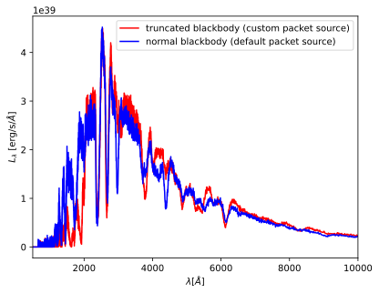

You can interact with this notebook online: Launch interactive version
Running TARDIS with a Custom Packet Source¶
By default, TARDIS generates energy packets using its BasePacketSource class, which models the photosphere of the supernova as a perfect blackbody (see Energy Packet Initialization). However, users may create their own packet source, as will be shown in this notebook. In order to do this, a user must create a class (that can but does not have to inherit from BasePacketSource) which contains a method create_packets that takes in (in
this order): - the photospheric temperature - the number of packets - a random number generator - the photospheric radius
and returns arrays of the radii, frequencies, propogation directions, and energies of the ensemble of packets (once again see Energy Packet Initialization for more information). To use your packet source in a run of TARDIS, you must pass an instance of your class into the run_tardis function under the packet_source keyword argument.
Note
In both the BasePacketSource class and in the example here, all packets are generated at the same radius. This need not be true in general (although the create_packets method should only take in a single radius as its argument).
We show an example of how a custom packet source is used:
[1]:
# Import necessary packages
import numpy as np
from tardis import constants as const
from astropy import units as u
from tardis.montecarlo.packet_source import BasePacketSource
from tardis import run_tardis
import matplotlib.pyplot as plt
from tardis.io.atom_data import download_atom_data
/usr/share/miniconda3/envs/tardis/lib/python3.7/importlib/_bootstrap.py:219: QAWarning: pyne.data is not yet QA compliant.
return f(*args, **kwds)
/usr/share/miniconda3/envs/tardis/lib/python3.7/site-packages/traitlets/traitlets.py:3036: FutureWarning: --rc={'figure.dpi': 96} for dict-traits is deprecated in traitlets 5.0. You can pass --rc <key=value> ... multiple times to add items to a dict.
FutureWarning,
[2]:
# Download the atomic data used for a run of TARDIS
download_atom_data('kurucz_cd23_chianti_H_He')
[3]:
# Create a packet source class that contains a create_packets method
class TruncBlackbodySource(BasePacketSource):
"""
Custom inner boundary source class to replace the Blackbody source
with a truncated Blackbody source.
"""
def __init__(self, seed, truncation_wavelength):
super().__init__(seed)
self.rng = np.random.default_rng(seed=seed)
self.truncation_wavelength = truncation_wavelength
def create_packets(self, T, no_of_packets, rng, radius,
drawing_sample_size=None):
"""
Packet source that generates a truncated Blackbody source.
Parameters
----------
T : float
Blackbody temperature
no_of_packets : int
number of packets to be created
truncation_wavelength : float
truncation wavelength in Angstrom.
Only wavelengths higher than the truncation wavelength
will be sampled.
"""
# Makes uniform array of packet radii
radii = np.ones(no_of_packets) * radius
# Use mus and energies from normal blackbody source.
mus = self.create_zero_limb_darkening_packet_mus(no_of_packets, self.rng)
energies = self.create_uniform_packet_energies(no_of_packets, self.rng)
# If not specified, draw 2 times as many packets and reject any beyond no_of_packets.
if drawing_sample_size is None:
drawing_sample_size = 2 * no_of_packets
# Blackbody will be truncated below truncation_wavelength / above truncation_frequency.
truncation_frequency = u.Quantity(self.truncation_wavelength, u.Angstrom).to(
u.Hz, equivalencies=u.spectral()).value
# Draw nus from blackbody distribution and reject based on truncation_frequency.
# If more nus.shape[0] > no_of_packets use only the first no_of_packets.
nus = self.create_blackbody_packet_nus(T, drawing_sample_size, self.rng)
nus = nus[nus<truncation_frequency][:no_of_packets]
# Only required if the truncation wavelength is too big compared to the maximum
# of the blackbody distribution. Keep sampling until nus.shape[0] > no_of_packets.
while nus.shape[0] < no_of_packets:
additional_nus = self.create_blackbody_packet_nus(
T, drawing_sample_size, self.rng
)
mask = additional_nus < truncation_frequency
additional_nus = additional_nus[mask][:no_of_packets]
nus = np.hstack([nus, additional_nus])[:no_of_packets]
return radii, nus, mus, energies
[4]:
# Call an instance of the packet source class
packet_source = TruncBlackbodySource(
53253, truncation_wavelength=2000
)
We now run TARDIS both with and without our custom packet source, and we compare the results:
[5]:
mdl = run_tardis('tardis_example.yml',
packet_source=packet_source)
mdl_norm = run_tardis('tardis_example.yml')
[py.warnings ][WARNING] /usr/share/miniconda3/envs/tardis/lib/python3.7/site-packages/astropy/units/equivalencies.py:124: RuntimeWarning: divide by zero encountered in double_scalars
(si.m, si.Hz, lambda x: _si.c.value / x),
(warnings.py:110)
[py.warnings ][WARNING] /usr/share/miniconda3/envs/tardis/lib/python3.7/site-packages/astropy/units/equivalencies.py:124: RuntimeWarning:
divide by zero encountered in double_scalars
(warnings.py:110)
[6]:
%matplotlib inline
plt.plot(mdl.runner.spectrum_virtual.wavelength,
mdl.runner.spectrum_virtual.luminosity_density_lambda,
color='red', label='truncated blackbody (custom packet source)')
plt.plot(mdl_norm.runner.spectrum_virtual.wavelength,
mdl_norm.runner.spectrum_virtual.luminosity_density_lambda,
color='blue', label='normal blackbody (default packet source)')
plt.xlabel('$\lambda [\AA]$')
plt.ylabel('$L_\lambda$ [erg/s/$\AA$]')
plt.xlim(500, 10000)
plt.legend()
[6]:
<matplotlib.legend.Legend at 0x7fdc06f9b4d0>
